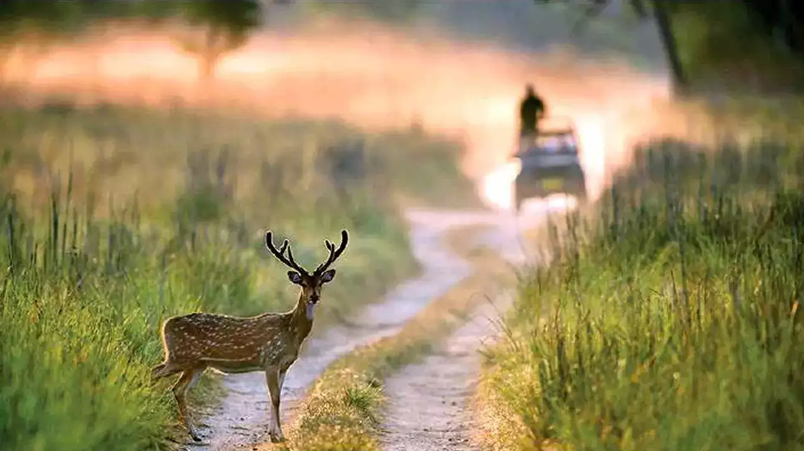
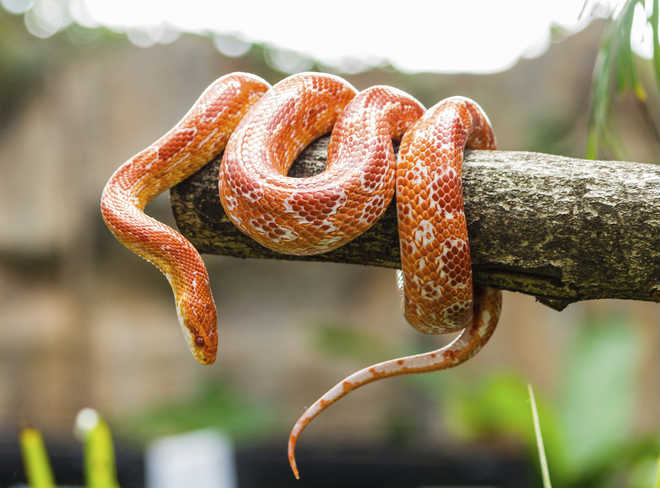

The chital or cheetal (Axis axis; /tʃiːtəl/), also known as the spotted deer, chital deer, and axis deer, is a deer species native to the Indian subcontinent. It was first described and given a binomial name by German naturalist Johann Christian Polycarp Erxleben in 1777. A moderate-sized deer, male chital reach 90 cm (35 in) and females 70 cm (28 in) at the shoulder. While males weigh 30–75 kg (66–165 lb), the lighter females weigh 25–45 kg (55–99 lb). It is sexually dimorphic; males are larger than females, and antlers are present only on males. The upper parts are golden to rufous, completely covered in white spots. The abdomen, rump, throat, insides of legs, ears, and tail are all white. The antlers, three-pronged, are nearly 1 m (3 ft 3 in) long. The chital was first described by Johann Christian Polycarp Erxleben in 1777 as Cervus axis.[8] In 1827, Charles Hamilton Smith placed the chital in its own subgenus Axis under the genus Cervus.[9][3] Axis was elevated to generic status by Colin P. Groves and Peter Grubb in 1987.[10] The genus Hyelaphus was considered a subgenus of Axis.[2] However, a morphological analysis showed significant differences between Axis and Hyelaphus.[11] A phylogenetic study later that year showed that Hyelaphus is closer to the genus Rusa than Axis. Axis was revealed to be paraphyletic and distant from Hyelaphus in the phylogenetic tree; the chital was found to form a clade with the barasingha (Rucervus duvaucelii) and the Schomburgk's deer (Rucervus schomburgki). The chital was estimated to have genetically diverged from the Rucervus lineage in the Early Pliocene about 5 million years ago. The following cladogram is based on a 2006 phylogenetic study:[12

The corn snake (Pantherophis guttatus) is a North American species of rat snake that subdues its small prey by constriction.[4][5] It is found throughout the southeastern and central United States. Though superficially resembling the venomous copperhead and often killed as a result of this mistaken identity, corn snakes lack functional venom and are harmless. Corn snakes are beneficial to humans [6] by helping to control populations of wild rodent pests that damage crops and spread disease.[7] The corn snake is named for the species' regular presence near grain stores, where it preys on mice and rats that eat harvested corn (maize).[8] The Oxford English Dictionary cites this usage as far back as 1675, whilst other sources maintain that the corn snake is so-named because the distinctive, nearly-checkered pattern of the snake's belly scales resembles the kernels of variegated corn
g